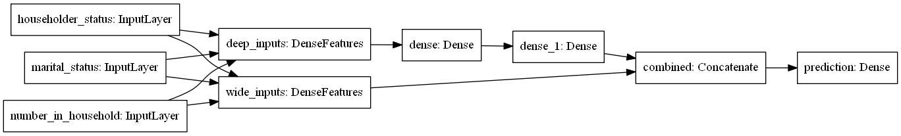
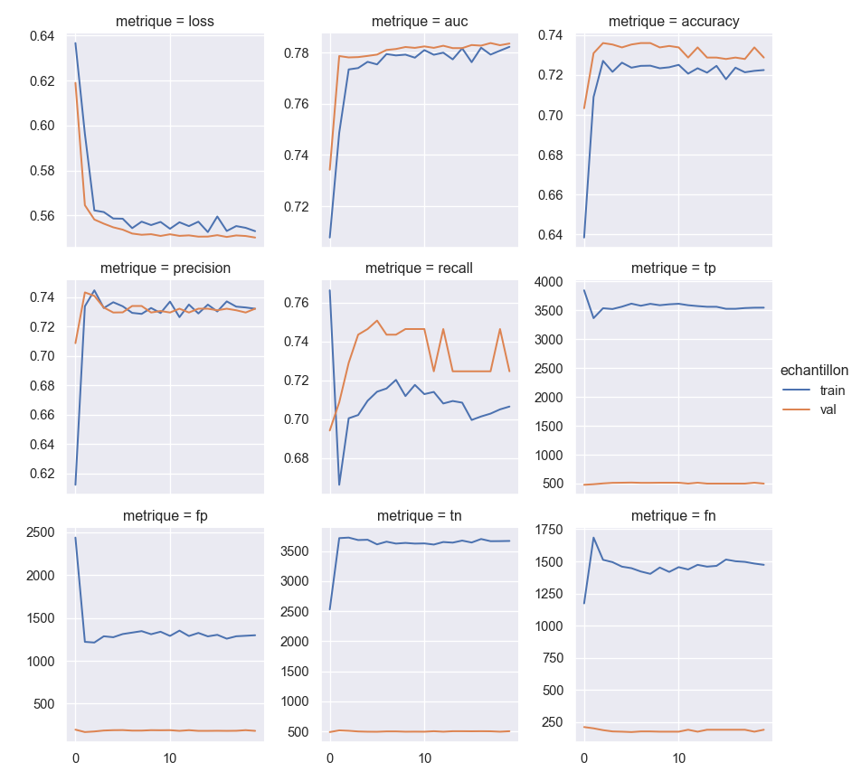

Introduction
On modelise une cible binaire a l’aide de l’interface Keras, mais contrairement au document precedent sur les DNN avec Keras Sequentiel, ici on va utiliser Keras Fonctionnel qui offre plus de possibilites : on peut entre autres coupler des reseaux de type different.
On reprend le jeu de donnees et les pretraitements du document precedent sur TensorFlow.
Donnees et modules
library("reticulate")
# on a installe tensorflow dans l'environnement vituel conda "tf_env"
use_condaenv(condaenv = "tf_env")
data(package = "arules", IncomeESL)
dtf_class = tidyr::drop_na(IncomeESL)
colnames(dtf_class) = gsub(" ", "_", colnames(dtf_class))
dtf_class = dtf_class[c("number_in_household", "marital_status", "householder_status", "income")]
dtf_class$number_in_household = as.character(dtf_class$number_in_household)
dtf_class$number_in_household[dtf_class$number_in_household == "9+"]= "9"
dtf_class$number_in_household = as.integer(dtf_class$number_in_household)
for (col_quali in colnames(dtf_class)[sapply(dtf_class, is.factor)]) {
dtf_class[[col_quali]] = as.character(dtf_class[[col_quali]] )
}
dtf_class$income = gsub(",", "-", dtf_class$income)import numpy as np
import pandas as pd
pd.set_option('display.max_columns', None)
import sys
import shutil
import pprint
pp = pprint.PrettyPrinter(indent=4)
from sklearn.model_selection import train_test_split
import tensorflow as tf
from tensorflow import feature_column
from tensorflow.keras import layers
# pour regler un bug graphique assez courant avec Anaconda,
# adapter le chemin vers le dossier 'plugins/platforms'
import os
from os import path
os.environ['QT_QPA_PLATFORM_PLUGIN_PATH'] = 'C:/Users/Sebastien/Anaconda3/Library/plugins/platforms'
os.chdir(".")
import matplotlib.pyplot as plt
import seaborn as sns
sns.set()
tf.random.set_seed(2021)Les versions Python et TensorFlow utilisees.
sys.version'3.8.8 (default, Apr 13 2021, 15:08:03) [MSC v.1916 64 bit (AMD64)]'tf.__version__'2.3.0'Les donnees sous Python.
dtf_class = r.dtf_class
dtf_class.head() number_in_household marital_status householder_status income
0 5 married own 75+
1 3 married rent 75+
2 4 single live with parents/family [0-10)
3 4 single live with parents/family [0-10)
4 2 married own [50-75)Frequences des modalites de la cible.
dtf_class.income.value_counts(normalize=True).sort_index()75+ 0.108057
[0-10) 0.182519
[10-15) 0.076934
[15-20) 0.073444
[20-25) 0.089878
[25-30) 0.076643
[30-40) 0.123037
[40-50) 0.114020
[50-75) 0.155468
Name: income, dtype: float64Dictionnaire pour recoder la variable cible.
# mapping pour recoder les modalites cibles en entiers
dico_income_bin = {'[0-10)':0,'[10-15)':0,'[15-20)':0, '[20-25)':0,'[25-30)':0, '[30-40)':1, '[40-50)':1, '[50-75)':1,'75+':1}
pp.pprint(dico_income_bin){ '75+': 1,
'[0-10)': 0,
'[10-15)': 0,
'[15-20)': 0,
'[20-25)': 0,
'[25-30)': 0,
'[30-40)': 1,
'[40-50)': 1,
'[50-75)': 1}Pretraitement des colonnes
feature_columns = []
# numeriques
feature_columns.append(feature_column.numeric_column("number_in_household"))
# en buckets
number_in_household = feature_column.numeric_column("number_in_household")
number_bucket = tf.feature_column.bucketized_column(number_in_household, boundaries = [3, 5, 7])
feature_columns.append(number_bucket)
# indicatrices
marital_status = tf.feature_column.categorical_column_with_vocabulary_list(
'marital_status', ['single', 'married', 'divorced', 'cohabitation'', widowed'])
marital_one_hot = tf.feature_column.indicator_column(marital_status)
feature_columns.append(marital_one_hot)
# embedding
householder_status = tf.feature_column.categorical_column_with_vocabulary_list(
'householder_status', ['own', 'rent', 'live with parents/family'])
householder_embedding = tf.feature_column.embedding_column(householder_status, dimension = 2)
feature_columns.append(householder_embedding)
# interactions
interactions = tf.feature_column.crossed_column([marital_status, number_bucket],
hash_bucket_size = 7, hash_key = 8)
interactions = tf.feature_column.indicator_column(interactions)
feature_columns.append(interactions)Partie “wide” du reseau :
- variables creuses (indicatrices et leurs interactions)
- relation lineaire avec la cible (modulo l’application d’un softmax ou d’une sigmoide)
wide_columns = {
"marital_one_hot": marital_one_hot,
"interactions": interactions
}Partie “deep” :
- variables numeriques “denses”
- plongements (“embeddings”)
- relation complexe avec la cible
deep_columns = {
"number_in_household":feature_column.numeric_column("number_in_household"),
"number_bucket": number_bucket,
"householder_embedding": householder_embedding
}Fonction de lecture des donnees
On prend dico = dico_income_bin pour imposer par defaut une cible binaire recodee en 0/1.
# on cree un tf.data.dataset a patir du Dataframe
def df_to_dataset(dataframe, shuffle = True, batch_size= 32, dico= dico_income_bin, nb_repet= None):
dataframe = dataframe.copy()
labels = dataframe.pop('income').map(dico)
ds = tf.data.Dataset.from_tensor_slices((dict(dataframe), labels))
if shuffle:
# permutation dde toutes les lignes du dataframe car seulement quelques milliers de lignes
ds = ds.shuffle(buffer_size = len(dataframe))
ds = ds.repeat(count = nb_repet).batch(batch_size)
return dsModelisation Fonctionnelle avec Keras
Train, test, validation
Les trois jeux de donnees pour l’apprentissage, les validations et le test final.
# test = 20% du total
train, test = train_test_split(dtf_class, test_size=0.2, random_state = 2021)
# val = 25% du train = 20% du total
train, val = train_test_split(train, test_size=0.25, random_state = 2021)Parametres et metriques
Architecture du modele
Le graphique ci-dessous montre l’architecture du reseau, qui est une combinaison d’une partie large et d’une partie profonde. On notera que les variables d’entree peuvent etre simultanement utilisees par les deux parties du modele.
# on doit typer les variables d'entree utilisees
inputs_features = {'number_in_household' : layers.Input(name = 'number_in_household',
shape = (), dtype = 'int32'),
'marital_status' : layers.Input(name = 'marital_status', shape = (), dtype = 'string'),
'householder_status' : layers.Input(name = 'householder_status', shape = (), dtype = 'string'),
}
# parametrage des couches cachees de la partie deep
dnn_hidden_units = [10, 10]
# partie deep
deep = layers.DenseFeatures(deep_columns.values(), name = 'deep_inputs')(inputs_features)
for num_nodes in dnn_hidden_units:
deep = layers.Dense(num_nodes, activation = 'relu')(deep)
# partie wide
wide = layers.DenseFeatures(wide_columns.values(), name = 'wide_inputs')(inputs_features)
# on combine les deux parties
combined = layers.concatenate(inputs = [deep, wide], name = 'combined')
# le score de sortie
output = layers.Dense(units = 1, activation = 'sigmoid', name = 'prediction')(combined)
# on termine la definition du modele
modele = tf.keras.Model(inputs = list(inputs_features.values()), outputs = output)# Diagramme du reseau
tf.keras.utils.plot_model(modele, show_shapes = False, rankdir = 'LR')
Autres parametres
Comme dans le document precedent on ajoute des metriques et on definit trois hyperparametres.
Les metriques pour le cas d’une cible binaire.
metriques = [tf.keras.metrics.AUC(name='auc'),
tf.keras.metrics.BinaryAccuracy(name='accuracy'),
tf.keras.metrics.Precision(name='precision'),
tf.keras.metrics.Recall(name='recall'),
tf.keras.metrics.TruePositives(name='tp'),
tf.keras.metrics.FalsePositives(name='fp'),
tf.keras.metrics.TrueNegatives(name='tn'),
tf.keras.metrics.FalseNegatives(name='fn')
]Les hyperparametres.
TRAIN_BATCH_SIZE = 64
NUM_TRAIN_EXAMPLES = 200000
NUM_CHECKPOINTS = 20
steps_per_epoch = NUM_TRAIN_EXAMPLES // (TRAIN_BATCH_SIZE * NUM_CHECKPOINTS)Entrainement des modeles
On lit les donnees par batchs et on entraine le modele.
train_ds = df_to_dataset(train, batch_size = TRAIN_BATCH_SIZE, dico = dico_income_bin)
val_ds = df_to_dataset(val, shuffle = False, batch_size = TRAIN_BATCH_SIZE,
dico = dico_income_bin, nb_repet = 1)
test_ds = df_to_dataset(test, shuffle = False, batch_size = TRAIN_BATCH_SIZE,
dico = dico_income_bin, nb_repet = 1)
modele.compile(optimizer = tf.keras.optimizers.Adam(lr=1e-3),
loss = 'binary_crossentropy',
metrics = metriques)
history = modele.fit(x = train_ds,
steps_per_epoch = steps_per_epoch,
epochs = NUM_CHECKPOINTS,
validation_data = val_ds,
verbose = 2
)
Epoch 1/20
156/156 - 4s - loss: 0.6366 - auc: 0.7078 - accuracy: 0.6384 - precision: 0.6121 - recall: 0.7663 - tp: 3846.0000 - fp: 2437.0000 - tn: 2528.0000 - fn: 1173.0000 - val_loss: 0.6189 - val_auc: 0.7342 - val_accuracy: 0.7033 - val_precision: 0.7086 - val_recall: 0.6942 - val_tp: 479.0000 - val_fp: 197.0000 - val_tn: 488.0000 - val_fn: 211.0000
Epoch 2/20
156/156 - 0s - loss: 0.5963 - auc: 0.7487 - accuracy: 0.7089 - precision: 0.7337 - recall: 0.6663 - tp: 3364.0000 - fp: 1221.0000 - tn: 3714.0000 - fn: 1685.0000 - val_loss: 0.5646 - val_auc: 0.7786 - val_accuracy: 0.7309 - val_precision: 0.7432 - val_recall: 0.7087 - val_tp: 489.0000 - val_fp: 169.0000 - val_tn: 516.0000 - val_fn: 201.0000
Epoch 3/20
156/156 - 0s - loss: 0.5623 - auc: 0.7734 - accuracy: 0.7271 - precision: 0.7446 - recall: 0.7005 - tp: 3536.0000 - fp: 1213.0000 - tn: 3723.0000 - fn: 1512.0000 - val_loss: 0.5582 - val_auc: 0.7781 - val_accuracy: 0.7360 - val_precision: 0.7408 - val_recall: 0.7290 - val_tp: 503.0000 - val_fp: 176.0000 - val_tn: 509.0000 - val_fn: 187.0000
Epoch 4/20
156/156 - 0s - loss: 0.5615 - auc: 0.7739 - accuracy: 0.7216 - precision: 0.7325 - recall: 0.7022 - tp: 3522.0000 - fp: 1286.0000 - tn: 3682.0000 - fn: 1494.0000 - val_loss: 0.5564 - val_auc: 0.7782 - val_accuracy: 0.7353 - val_precision: 0.7329 - val_recall: 0.7435 - val_tp: 513.0000 - val_fp: 187.0000 - val_tn: 498.0000 - val_fn: 177.0000
Epoch 5/20
156/156 - 0s - loss: 0.5587 - auc: 0.7764 - accuracy: 0.7262 - precision: 0.7365 - recall: 0.7095 - tp: 3563.0000 - fp: 1275.0000 - tn: 3687.0000 - fn: 1459.0000 - val_loss: 0.5548 - val_auc: 0.7787 - val_accuracy: 0.7338 - val_precision: 0.7295 - val_recall: 0.7464 - val_tp: 515.0000 - val_fp: 191.0000 - val_tn: 494.0000 - val_fn: 175.0000
Epoch 6/20
156/156 - 1s - loss: 0.5586 - auc: 0.7754 - accuracy: 0.7237 - precision: 0.7337 - recall: 0.7141 - tp: 3615.0000 - fp: 1312.0000 - tn: 3610.0000 - fn: 1447.0000 - val_loss: 0.5537 - val_auc: 0.7792 - val_accuracy: 0.7353 - val_precision: 0.7296 - val_recall: 0.7507 - val_tp: 518.0000 - val_fp: 192.0000 - val_tn: 493.0000 - val_fn: 172.0000
Epoch 7/20
156/156 - 0s - loss: 0.5544 - auc: 0.7794 - accuracy: 0.7246 - precision: 0.7292 - recall: 0.7158 - tp: 3579.0000 - fp: 1329.0000 - tn: 3655.0000 - fn: 1421.0000 - val_loss: 0.5520 - val_auc: 0.7810 - val_accuracy: 0.7360 - val_precision: 0.7339 - val_recall: 0.7435 - val_tp: 513.0000 - val_fp: 186.0000 - val_tn: 499.0000 - val_fn: 177.0000
Epoch 8/20
156/156 - 0s - loss: 0.5573 - auc: 0.7789 - accuracy: 0.7247 - precision: 0.7285 - recall: 0.7202 - tp: 3612.0000 - fp: 1346.0000 - tn: 3623.0000 - fn: 1403.0000 - val_loss: 0.5514 - val_auc: 0.7814 - val_accuracy: 0.7360 - val_precision: 0.7339 - val_recall: 0.7435 - val_tp: 513.0000 - val_fp: 186.0000 - val_tn: 499.0000 - val_fn: 177.0000
Epoch 9/20
156/156 - 0s - loss: 0.5557 - auc: 0.7792 - accuracy: 0.7234 - precision: 0.7325 - recall: 0.7119 - tp: 3588.0000 - fp: 1310.0000 - tn: 3634.0000 - fn: 1452.0000 - val_loss: 0.5517 - val_auc: 0.7821 - val_accuracy: 0.7338 - val_precision: 0.7295 - val_recall: 0.7464 - val_tp: 515.0000 - val_fp: 191.0000 - val_tn: 494.0000 - val_fn: 175.0000
Epoch 10/20
156/156 - 0s - loss: 0.5571 - auc: 0.7780 - accuracy: 0.7239 - precision: 0.7291 - recall: 0.7176 - tp: 3604.0000 - fp: 1339.0000 - tn: 3623.0000 - fn: 1418.0000 - val_loss: 0.5509 - val_auc: 0.7818 - val_accuracy: 0.7345 - val_precision: 0.7305 - val_recall: 0.7464 - val_tp: 515.0000 - val_fp: 190.0000 - val_tn: 495.0000 - val_fn: 175.0000
Epoch 11/20
156/156 - 1s - loss: 0.5541 - auc: 0.7809 - accuracy: 0.7251 - precision: 0.7369 - recall: 0.7129 - tp: 3613.0000 - fp: 1290.0000 - tn: 3626.0000 - fn: 1455.0000 - val_loss: 0.5517 - val_auc: 0.7824 - val_accuracy: 0.7338 - val_precision: 0.7295 - val_recall: 0.7464 - val_tp: 515.0000 - val_fp: 191.0000 - val_tn: 494.0000 - val_fn: 175.0000
Epoch 12/20
156/156 - 0s - loss: 0.5570 - auc: 0.7791 - accuracy: 0.7207 - precision: 0.7263 - recall: 0.7140 - tp: 3588.0000 - fp: 1352.0000 - tn: 3607.0000 - fn: 1437.0000 - val_loss: 0.5509 - val_auc: 0.7818 - val_accuracy: 0.7287 - val_precision: 0.7321 - val_recall: 0.7246 - val_tp: 500.0000 - val_fp: 183.0000 - val_tn: 502.0000 - val_fn: 190.0000
Epoch 13/20
156/156 - 1s - loss: 0.5553 - auc: 0.7799 - accuracy: 0.7234 - precision: 0.7349 - recall: 0.7081 - tp: 3573.0000 - fp: 1289.0000 - tn: 3649.0000 - fn: 1473.0000 - val_loss: 0.5512 - val_auc: 0.7826 - val_accuracy: 0.7338 - val_precision: 0.7295 - val_recall: 0.7464 - val_tp: 515.0000 - val_fp: 191.0000 - val_tn: 494.0000 - val_fn: 175.0000
Epoch 14/20
156/156 - 0s - loss: 0.5572 - auc: 0.7773 - accuracy: 0.7212 - precision: 0.7288 - recall: 0.7094 - tp: 3561.0000 - fp: 1325.0000 - tn: 3639.0000 - fn: 1459.0000 - val_loss: 0.5506 - val_auc: 0.7817 - val_accuracy: 0.7287 - val_precision: 0.7321 - val_recall: 0.7246 - val_tp: 500.0000 - val_fp: 183.0000 - val_tn: 502.0000 - val_fn: 190.0000
Epoch 15/20
156/156 - 1s - loss: 0.5526 - auc: 0.7816 - accuracy: 0.7246 - precision: 0.7348 - recall: 0.7085 - tp: 3561.0000 - fp: 1285.0000 - tn: 3673.0000 - fn: 1465.0000 - val_loss: 0.5506 - val_auc: 0.7817 - val_accuracy: 0.7287 - val_precision: 0.7321 - val_recall: 0.7246 - val_tp: 500.0000 - val_fp: 183.0000 - val_tn: 502.0000 - val_fn: 190.0000
Epoch 16/20
156/156 - 0s - loss: 0.5596 - auc: 0.7762 - accuracy: 0.7178 - precision: 0.7302 - recall: 0.6996 - tp: 3526.0000 - fp: 1303.0000 - tn: 3641.0000 - fn: 1514.0000 - val_loss: 0.5513 - val_auc: 0.7829 - val_accuracy: 0.7280 - val_precision: 0.7310 - val_recall: 0.7246 - val_tp: 500.0000 - val_fp: 184.0000 - val_tn: 501.0000 - val_fn: 190.0000
Epoch 17/20
156/156 - 0s - loss: 0.5531 - auc: 0.7819 - accuracy: 0.7237 - precision: 0.7370 - recall: 0.7014 - tp: 3526.0000 - fp: 1258.0000 - tn: 3699.0000 - fn: 1501.0000 - val_loss: 0.5505 - val_auc: 0.7827 - val_accuracy: 0.7287 - val_precision: 0.7321 - val_recall: 0.7246 - val_tp: 500.0000 - val_fp: 183.0000 - val_tn: 502.0000 - val_fn: 190.0000
Epoch 18/20
156/156 - 0s - loss: 0.5553 - auc: 0.7792 - accuracy: 0.7214 - precision: 0.7335 - recall: 0.7029 - tp: 3539.0000 - fp: 1286.0000 - tn: 3663.0000 - fn: 1496.0000 - val_loss: 0.5511 - val_auc: 0.7837 - val_accuracy: 0.7280 - val_precision: 0.7310 - val_recall: 0.7246 - val_tp: 500.0000 - val_fp: 184.0000 - val_tn: 501.0000 - val_fn: 190.0000
Epoch 19/20
156/156 - 1s - loss: 0.5545 - auc: 0.7807 - accuracy: 0.7221 - precision: 0.7329 - recall: 0.7051 - tp: 3545.0000 - fp: 1292.0000 - tn: 3664.0000 - fn: 1483.0000 - val_loss: 0.5509 - val_auc: 0.7828 - val_accuracy: 0.7338 - val_precision: 0.7295 - val_recall: 0.7464 - val_tp: 515.0000 - val_fp: 191.0000 - val_tn: 494.0000 - val_fn: 175.0000
Epoch 20/20
156/156 - 0s - loss: 0.5530 - auc: 0.7822 - accuracy: 0.7225 - precision: 0.7320 - recall: 0.7065 - tp: 3546.0000 - fp: 1298.0000 - tn: 3667.0000 - fn: 1473.0000 - val_loss: 0.5502 - val_auc: 0.7835 - val_accuracy: 0.7287 - val_precision: 0.7321 - val_recall: 0.7246 - val_tp: 500.0000 - val_fp: 183.0000 - val_tn: 502.0000 - val_fn: 190.0000modele.summary()Model: "functional_1"
__________________________________________________________________________________________________
Layer (type) Output Shape Param # Connected to
==================================================================================================
householder_status (InputLayer) [(None,)] 0
__________________________________________________________________________________________________
marital_status (InputLayer) [(None,)] 0
__________________________________________________________________________________________________
number_in_household (InputLayer [(None,)] 0
__________________________________________________________________________________________________
deep_inputs (DenseFeatures) (None, 7) 6 householder_status[0][0]
marital_status[0][0]
number_in_household[0][0]
__________________________________________________________________________________________________
dense (Dense) (None, 10) 80 deep_inputs[0][0]
__________________________________________________________________________________________________
dense_1 (Dense) (None, 10) 110 dense[0][0]
__________________________________________________________________________________________________
wide_inputs (DenseFeatures) (None, 11) 0 householder_status[0][0]
marital_status[0][0]
number_in_household[0][0]
__________________________________________________________________________________________________
combined (Concatenate) (None, 21) 0 dense_1[0][0]
wide_inputs[0][0]
__________________________________________________________________________________________________
prediction (Dense) (None, 1) 22 combined[0][0]
==================================================================================================
Total params: 218
Trainable params: 218
Non-trainable params: 0
__________________________________________________________________________________________________Performance des modeles
Fonction de perte et metriques sur l’echantillon de test.
pd.DataFrame({"KPI": modele.metrics_names,
"valeurs": modele.evaluate(test_ds, verbose = 0)}) KPI valeurs
0 loss 0.536791
1 auc 0.798552
2 accuracy 0.736192
3 precision 0.739198
4 recall 0.711738
5 tp 479.000000
6 fp 169.000000
7 tn 534.000000
8 fn 194.000000Graphiques des performances du modele selon l’epoque virtuelle.
dtf = pd.DataFrame(history.history)
colonnes = dtf.columns
dtf = dtf.reset_index().rename(columns = {'index': 'virtual_epochs'})
dtf_tr = pd.melt(dtf, id_vars = ['virtual_epochs'], value_vars = colonnes,
var_name ='noms_col', value_name='valeurs_col')
dtf_tr["metrique"] = dtf_tr.noms_col.str.replace("^val_", "", regex = True)
dtf_tr["echantillon"] = "val"
dtf_tr.loc[dtf_tr.noms_col == dtf_tr.metrique, "echantillon"] = "train"
g = sns.FacetGrid(dtf_tr, col="metrique", hue = "echantillon", sharey = False, col_wrap = 3)
g= g.map_dataframe(sns.lineplot, x = "virtual_epochs",y = "valeurs_col").add_legend()
plt.show()
La matrice de confusion du modele sur l’echantillon test.
prev = modele.predict(test_ds).squeeze()
# on choisit un seuil : 0.5 par defaut dans les metriques precedentes (vrais positifs, ...)
seuil = 0.5
prev = (prev >= seuil).astype(int)
# le reel
reel = pd.concat([pd.DataFrame(dts[1], columns = ["x"]) for dts in iter(test_ds)])
pd.DataFrame({'Y': list(reel.x), 'Ypred': prev}).groupby(["Y", "Ypred"]).size(
).reset_index(name = "nb").pivot(index="Y", columns="Ypred") nb
Ypred 0 1
Y
0 534 169
1 194 479Modelisation avec tf.estimator
Fonction de pre-traitement basee sur pandas_input_fn.
def make_input_fn(dataframe, shuffle= True, batch_size = TRAIN_BATCH_SIZE,
dico = dico_income_bin, num_epochs= None):
dataframe = dataframe.copy()
labels = dataframe.pop('income').map(dico)
return tf.compat.v1.estimator.inputs.pandas_input_fn(
x = dataframe,
y = labels,
batch_size = batch_size,
num_epochs = num_epochs,
shuffle = shuffle,
queue_capacity = None,
num_threads = 1
)On utilise le DNNLinearCombinedClassifier qui combine des reseaux deep et wide. On peut affiner la configuration de l’estimateur avec tf.estimator.RunConfig.
hidden_units = [16, 8]
output_dir = './tmp_tensorflow/trained_model'
shutil.rmtree(output_dir, ignore_errors = True)
run_config = tf.estimator.RunConfig(tf_random_seed = 2021,
save_checkpoints_secs = 5,
keep_checkpoint_max = 3)
estimator_dnnlin = tf.estimator.DNNLinearCombinedClassifier(
model_dir = output_dir,
linear_feature_columns = wide_columns.values(),
dnn_feature_columns = deep_columns.values(),
dnn_hidden_units = hidden_units,
n_classes = len(dico_income_bin),
config = run_config)On precise quelques parametres pour l’apprentissage et le test.
num_train_steps = steps_per_epoch * NUM_CHECKPOINTS
# pour le jeu d'entrainement
train_spec = tf.estimator.TrainSpec(input_fn = make_input_fn(train, shuffle=True, num_epochs=None),
max_steps = num_train_steps)
# pour le jeu de validation, on evalue apres start_delay_secs secondes
# et on evalue toutes les throttle_secs secondesWARNING:tensorflow:From C:\Users\SEBAST~1\ANACON~1\envs\tf_env\lib\site-packages\tensorflow\python\util\lazy_loader.py:63: The name tf.estimator.inputs is deprecated. Please use tf.compat.v1.estimator.inputs instead.eval_spec = tf.estimator.EvalSpec(input_fn = make_input_fn(val, shuffle = False, num_epochs = 1),
steps = None,
start_delay_secs = 2,
throttle_secs = 4) On entraine et on evalue le modele.
# on vide le repertoire et on le supprime car il sert aussi de checkpoint
# et son contenu peut etre recharge pour poursuivre l'entrainement
shutil.rmtree(output_dir, ignore_errors = True)
tf.estimator.train_and_evaluate(estimator_dnnlin, train_spec, eval_spec)({'accuracy': 0.6909091, 'average_loss': 0.7212007, 'loss': 0.7190945, 'global_step': 3120}, [])
WARNING:tensorflow:From C:\Users\SEBAST~1\ANACON~1\envs\tf_env\lib\site-packages\tensorflow\python\training\training_util.py:235: Variable.initialized_value (from tensorflow.python.ops.variables) is deprecated and will be removed in a future version.
Instructions for updating:
Use Variable.read_value. Variables in 2.X are initialized automatically both in eager and graph (inside tf.defun) contexts.
WARNING:tensorflow:From C:\Users\SEBAST~1\ANACON~1\envs\tf_env\lib\site-packages\tensorflow_estimator\python\estimator\inputs\queues\feeding_queue_runner.py:60: QueueRunner.__init__ (from tensorflow.python.training.queue_runner_impl) is deprecated and will be removed in a future version.
Instructions for updating:
To construct input pipelines, use the `tf.data` module.
WARNING:tensorflow:From C:\Users\SEBAST~1\ANACON~1\envs\tf_env\lib\site-packages\tensorflow_estimator\python\estimator\inputs\queues\feeding_functions.py:491: add_queue_runner (from tensorflow.python.training.queue_runner_impl) is deprecated and will be removed in a future version.
Instructions for updating:
To construct input pipelines, use the `tf.data` module.
WARNING:tensorflow:AutoGraph could not transform <bound method _DNNModelV2.call of <tensorflow_estimator.python.estimator.canned.dnn._DNNModelV2 object at 0x000000005FA1FF10>> and will run it as-is.
Please report this to the TensorFlow team. When filing the bug, set the verbosity to 10 (on Linux, `export AUTOGRAPH_VERBOSITY=10`) and attach the full output.
Cause: module 'gast' has no attribute 'Index'
To silence this warning, decorate the function with @tf.autograph.experimental.do_not_convert
WARNING:tensorflow:From C:\Users\SEBAST~1\ANACON~1\envs\tf_env\lib\site-packages\tensorflow_estimator\python\estimator\canned\linear.py:1471: Layer.add_variable (from tensorflow.python.keras.engine.base_layer_v1) is deprecated and will be removed in a future version.
Instructions for updating:
Please use `layer.add_weight` method instead.
WARNING:tensorflow:From C:\Users\SEBAST~1\ANACON~1\envs\tf_env\lib\site-packages\tensorflow\python\keras\optimizer_v2\adagrad.py:82: calling Constant.__init__ (from tensorflow.python.ops.init_ops) with dtype is deprecated and will be removed in a future version.
Instructions for updating:
Call initializer instance with the dtype argument instead of passing it to the constructor
WARNING:tensorflow:From C:\Users\SEBAST~1\ANACON~1\envs\tf_env\lib\site-packages\tensorflow\python\training\monitored_session.py:906: start_queue_runners (from tensorflow.python.training.queue_runner_impl) is deprecated and will be removed in a future version.
Instructions for updating:
To construct input pipelines, use the `tf.data` module.
WARNING:tensorflow:From C:\Users\SEBAST~1\ANACON~1\envs\tf_env\lib\site-packages\tensorflow\python\training\saver.py:969: remove_checkpoint (from tensorflow.python.training.checkpoint_management) is deprecated and will be removed in a future version.
Instructions for updating:
Use standard file APIs to delete files with this prefix.